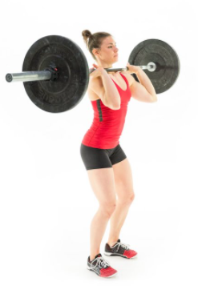

-
- 
-
0 de 3 Series
12 reps
12kg

Materiais
1 - Barra de lpo
2 - Presilhas (opcinal)
Como Fazer
Retirar a barra do rack, e coloca-la na posição de "rack natural" do nosso corpo acima do peito, encostada ao pescoço. O grip (pega) deve ser feito um pouco afastado da largura dos ombros, alguns atletas usam o mesmo grip que utilizam...